Co-located with ICCCN 2027 · Rome, Italy ↗
1st International Workshop · IARDS 2027
Intelligent, Adaptive and Resilient Distributed Systems
A one-day meeting where networking, distributed systems, AI and security researchers build systems that learn, adapt and recover.

About
Systems that are intelligent, adaptive and resilient by design
Modern networked applications run on distributed systems that span devices, edge nodes, data centers and heterogeneous networks. They must use data and resources intelligently, adapt to changing workloads, mobility and connectivity, and stay resilient to failures, attacks and uncertainty.
Advances in AI, including LLM-based and agentic approaches, and the maturing IoT–edge–cloud continuum are changing how these systems are designed, deployed and operated. Yet the networking, distributed systems, AI and security communities often address these questions separately. IARDS brings them together.
NetworkingDistributed systemsArtificial intelligenceSecurity and dependability
Explore
Everything you need, one page at a time
01
Call for papers
6 pages, IEEE double-column. Topics, submission and templates.
Open →
02
Important dates
Deadlines with a live countdown, and the workshop day.
Open →
03
Program
The full-day program, to be announced.
Open →
04
Committee
The organizers and the program chairs.
Open →
05
Venue
Rome, July 2027, together with ICCCN.
Open →